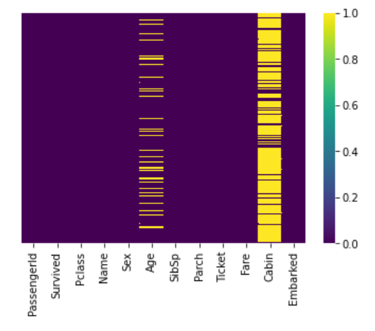

Titanic Kapal Super Britania Raya yang Tenggelam karena menabrak
sebuah gunung es di Samudra Atlantik Utara Pada 15 April 1912
dan Mengakibatkan Kematian 1.514 Penumpang.
Tujuan dari project ini adalah :
- Mengetahui konsep dasar dari pengguaan
library python untuk metode perhitungan akurasi dataset
- Dapat mengidentifikasi algoritma-algoritma
klasifikasi yang digunakan untuk analisis data akurasikeselamatan
korban titanic
- Dapat mengidentifikasi algoritma yang paling
optimal untuk kasus titanic ini.
Tools yang akan di gunakan pada proses visualisasi
dataset titanic ini adalah Jupyter Notebook dengan
beberapa library Python.
Python Libraries
- Pandas (Python for Data Analysis) - untukmemanipulasi data, persiapan data, dan pembersihan
data
- NumPy (Numerical Python) - untuk membentuk dan memanipulasi arrays. NumPy berfokus pada
scientific computing.
- Seaborn - untuk membuat visualisasi yang lebih high level dari segi interface dan statistical
graphics jika dibandingkan dengan Matplotlib.
Secara general tahapan Mechine Learning yang dilakukan untuk
memperoleh model tebaik adalah sebagi berikut :
- Explanatory Data Analysis (EDA) - mengexplor gimana karakter dari data, intinya kenali/pahami
data tersebut.
- Preprocessing data - suatu proses data seperti transfom/ubah data yg di miliki agar sesuai dgn
yg di butuhkan untk modelling.
- Modeling - data yang sudah siap sebelumnya,lalu kita masukan ke algoritma, agar dapat
memprediksi mana yang tidak selamat.
Pada Proses Analisa Data Menggunakan Python, Pertama-Tama Kita Harus Panggil Dulu Library Yang Kita
Butuhkan Untuk Proses Analisa :
Import Pandas As pd
Import Numpy As np
Import Seaborn As sns
Lalu Kita Panggil Dataset Yang Akan Kita Gunakan Dan, Tampilkan 10 Data Pertama Dari Dataset Tersebut.
Disini Nama Dataset Kita Yaitu train.csv dan test.csv
train = pd.read_csv("train.csv")
test = pd.read_csv("test.csv")
data.head(10)
hasil :
Selanjutnya Kita Lihat Informasi Dari Data Yang Kita Miliki Tersebut. Dapat Dilihat Dari Sintak Dibawah
Ini Bahwa Total Data Yang Ada Pada Dataset Ini Yaitu 891 Data Dengan 12 Kolom.
Print("Total Data : ", Data.Shape, "\N")
Data.Info()
hasil :
Lalu Kita Lihat Grafik Banyaknya Data Korban Yang Selamat Dan Tidak Selamat Dari Dataset Ini. Dari Grafik
Yang Dihasilkan Dapat Dilihat Bahwa Total Jumlah Korban Yang Tidak Selamat (0) Lebih Banyak Dibandingkan
Korban Yang Selamat (1).
Sns.Countplot(X="Survived", Data=Data)
hasil :
Lalu Kita Lihat Grafik Terhadap Banyaknya Data Korban Yang Selamat Dan Tidak Selamat Dari Dataset Ini.
Data Yang Ditampilkan Ini Dikelompokkan Berdasarkan Kolom Jenis Kelamin (Sex). Dapat Kita Lihat Bahwa
Banyaknya Korban Yang Tidak Selamat Tersebut Berjenis Kelamin Laki-Laki.
Sns.Countplot(X="Survived", Data=Data)
hasil :
Sekarang Kita Cek Banyaknya Data Korban Yang Selamat Dan Tidak Selamat Berdasarkan Pengelompokan Kolom
PClass. Dapat Diperhatikan Bahwa Korban Yang Tidak Selamat Itu Banyak Pada PClass 3.
Sns.Countplot(X="Survived", Hue="Pclass", Data=Data)
hasil :
Kita Lihat Grafik Banyaknya Penumpang Berdasarkan Pengelompokan Umur. Dapat Dilihat Dari Grafik
Bahwasannya Penumpang Banyak Berada Pada Umur 20 – 40 Tahun.
Data['Age'].Plot.Hist()
hasil :
Sekarang Kita Lihat Banyaknya Data Berdasarkan Kolom Fare (Tarif). Dapat Dilihat Bahwa Tarif Penumpang
Paling Banyak Berada Pada Range 0 – 100.
Data['Fare'].Plot.Hist(Bins=20, Figsize=(10,5))
hasil :
Lalu Kita Cek Banyaknya Jumlah Anggota Keluarga Penumpang Ke Dalam Bentuk Grafik. Dapat Dilihat Bahwa
Data Yang Paling Banyak Berada Pada Nilai 0 (Sendirian).
Sns.Countplot(X='SibSp', Data=Data)
hasil :
Sebelum Melakukan Proses Analisa Data, Pertama-Tama Kita Harus Melakukan Pengecekan Terhadap Banyaknya
Data Null/NaN (Kosong) Pada Dataset Kita. Dapat Kita Lihat Bahwa Data Yang Paling Banyak Kosong Berada
Pada Kolom Cabin Dan Age.
Data.Isnull().Sum()
hasil :
Disini Kita Juga Dapat Menggunakan Grafik Atau Heatmap Untuk Mengecek Banyaknya Data Yang Bernilai Kosong
(Null/NaN) Pada Dataset Kita. Hasil Output Yang Ditampilkan Sama Seperti Pada Sintak Sebelumnya,
Perbedaannya Pada Proses Penampilan Data Saja Yaitu Ke Dalam Bentuk Grafik. Data Yang Memiliki Nilai
Kosong (Null/NaN) Akan Digambarkan Dalam Bentuk Garis Berwarna Kuning.
Sns.Heatmap(Data.Isnull(), Yticklabels=False, Cmap='Viridis')
hasil :

Sekarang Kita Akan Melihat Range Umur Penumpang Berdasarkan Grafik Box Yang Dikelompokkan Berdasarkan
Kolom Pclass. Dapat Kita Lihat Bahwa Class 1 Banyak Penumpang Yang Berumur 30-50 Tahun, Class 2 Banyak
Penumpang Berumur 25-40 Tahun Sedangkan Class 3 Banyak Penumpang Yang Berumur 20-30 Tahun.
Sns.Boxplot(X='Pclass',Y='Age', Data=Data)
hasil :
Selanjutnya Kita Hapus Kolom Cabin Karena Kita Tidak Membutuhkan Kolom Ini Dalam Proses Analisa Data
Kita. Alasan Lain Kolom Ini Dihapus Karena Banyaknya Data Yang Kosong Pada Kolom Cabin Ini Sehingga Kurang
Baik Untuk Proses Analisa Data.
Data.Drop('Cabin', Axis=1, Inplace=True)
Berdasarkan Hasil Grafik Yang Diperoleh Dari Pengelompokan Kolom Pclass Dan Age. Sekarang Kita Akan
Melakukan Pengecekan Rata-Rata Umur Berdasarkan Pengelompokan Class Tersebut. Dapat Dilihat Bahwa Class 1
Memiliki Rata-Rata 38 Tahun, Class 2 Memiliki Rata-Rata 29 Tahun Dan Class 3 Memiliki Rata-Rata 25 Tahun.
Kelas_1 = Data.Loc[Data['Pclass'] == 1,'Age'].Mean()
Kelas_2 = Data.Loc[Data['Pclass'] == 2,'Age'].Mean()
Kelas_3 = Data.Loc[Data['Pclass'] == 3,'Age'].Mean()
Print("Rata-Rata Umur Berdasarkan Pclass 1 : %I" %Kelas_1, "Tahun")
Print("Rata-Rata Umur Berdasarkan Pclass 2 : %I" %Kelas_2, "Tahun")
Print("Rata-Rata Umur Berdasarkan Pclass 3 : %I" %Kelas_3, "Tahun")
Setelah Itu Kita Buat Sebuat Function Atau Method Untuk Mengatur Nilai Yang Kosong Pada Kolom Age
Berdasarkan Hasil Rata-Rata Yang Kita Peroleh Dari Sintak Sebelumnya.
Def Setting_umur(Cols):
Age = Cols[0]
Pclass = Cols[1]
If(Pd.Isnull(Age)):
If(Pclass == 1):
Return 38
Elif(Pclass == 2):
Return 29
Elif(Pclass == 3):
Return 25
Else:
Return Age
Sekarang Kita Aplikasikan Function Atau Method Yang Kita Buat Ini Ke Dalam Kolom Age Yang Kosong
Tersebut.
Data['Age'] = Data[['Age','Pclass']].Apply(Setting_umur, Axis=1)
Lalu Kita Hapus Data Yang Memiliki Nilai Kosong. Dari Hasil Pengecekan Sebelumnya Bahwa Masih Ada Data
Yang Kosong Pada Kolom Embarked Sebanyak 2 Data. Data Ini Kita Hapus Menggunakan Sintak Dropna().
Data.Dropna(Inplace=True)
Selanjutnya Kita Cek Kembali Dataset Kita Apakah Masih Memiliki Data Yang Bernilai Kosong Atau Tidak Pada
Setiap Kolom Dataset. Dari Deskripsi Yang Diperoleh Bahwa Tidak Ada Lagi Data Yang Bernilai Kosong Pada
Dataset Kita.
Data.Isnull().Sum()
hasil :
Sekarang Kita Lihat 2 Data Pertama Kita Menggunakan Sintak Head(). Tujuannya Disini Untuk Memeriksa
Format Data Dari Dataset Yang Kita Miliki.
Data.Head(2)
hasil :
Selanjutnya Kita Pisahkan Data Jenis Kelamin (Sex) Berdasarkan Value Yang Dimilikinya. Dari Proses Ini
Kita Akan Memiliki 2 Kolom Yaitu Male Dan Female.
Pd.Get_dummies(Data['Sex'])
hasil :
Lalu Kita Ambil Data Penumpang Yang Berjenis Kelamin Laki-Laki Untuk Proses Analisa Kita Selanjutnya. Hal
Ini Dikarenakan Data Korban Yang Tidak Selamat Banyak Berjenis Kelamin Laki-Laki.
Jenkel = Pd.Get_dummies(Data['Sex'], Drop_first=True)
Jenkel.Head()
hasil :
Selanjutnya Kita Lakukan Juga Hal Yang Sama Pada Kolom Embarked. Disini Kita Akan Memisahkan Setiap Data
Yang Ada Pada Kolom Ini Menjadi Beberapa Kolom. Pada Tahapan Ini Kita Juga Menghapus Kolom Data Embarked =
C
Emb = Pd.Get_dummies(Data['Embarked'], Drop_first=True)
Emb.Head()
hasil :
Lalu Kita Pisahkan Dan Simpan Juga Untuk Kolom Pclass. Proses Ini Digunakan Untuk Memecahkan Data
Kategorial Menjadi Data Tunggal. Pada Tahapan Ini Kita Menghapus Kolom Dengan Nilai Pclass = 1 Karena
Korban Dari Titanic Pada Pclass 1 Sedikit.
Pcl = Pd.Get_dummies(Data['Pclass'], Drop_first=True)
Pcl.Head()
hasil :
Setelah Semua Data Dipisahkan, Tahapan Selanjutnya Kita Masukkan Seluruh Variabel Yang Menyimpan Data
Pemisahan Tadi Ke Dalam Dataset Kita. Dan Cek Kondisi Dari Dataset Kita. Disini Dapat Kita Lihat Bahwa
Dataset Kita Memiliki Tambahan Beberapa Kolom Seperti Male, Q, S, 2 Dan 3.
Data = Pd.Concat([Data, Jenkel, Emb, Pcl], Axis=1)
Data.Head()
hasil :
Selanjutnya Kita Hapus Beberapa Kolom Yang Tidak Kita Butuhkan Pada Proses Analisa Data Kita Nantinya.
Adapun Kolom Yang Dihapus Adalah Sex, Embarked, Pclass, PassengerID, Name Dan Ticket.
Data.Drop(['Sex','Embarked','Pclass', 'PassengerId','Name','Ticket'], Axis=1, Inplace=True)
Data.Head()
hasil :
Analisa Data Menggunakan Logistic Regression
Sebelum Melakukan Analisa Data Menggunakan Logistic Regression, Pertama-Tama Kita Harus Memisahkan
Terlebih Dahulu Antara Variabel Dependen (Y) Dan Variabel Independent (X). Untuk Variabel Y Yaitu Kolom
Survived Dan Varibel X Yaitu Kolom Selain Kolom Survived. Hal Ini Bertujuan Untuk Melakukan Prediksi
Korban (Selamat / Tidak Selamat) Berdasarkan Kolom Variabel X.
X= Data.Drop('Survived', Axis=1)
Y= Data['Survived']
Selanjutnya Kita Pisahkan Antara Data Training Dan Data Testing Yang Kita Gunakan Pada Proses Analisa /
Prediksi Data. Disini Data Testing Yang Kita Gunakan Yaitu Sebanyak 30% Dan Diambil Secara Random Dari
Dataset Kita.
From Sklearn.Model_selection Import Train_test_split
X_train, X_test, Y_train, Y_test = Train_test_split(X, Y, Test_size=0.3, Random_state=1)
Lalu Kita Masukkan Semua Data Training Yang Kita Miliki Ke Dalam Function Atau Library Dari Analisa
Logistic Regression Kita.
From Sklearn.Linear_model Import LogisticRegression
LogModel = LogisticRegression()
LogModel.Fit(X_train, Y_train)
Lalu Kita Lakukan Prediksi Terhadap Data Testing Yang Kita Miliki. Prediksi Ini Dilakukan Untuk Melihat
Apakah Data Testing Yang Kita Miliki Menghasilkan Output Sesuai Dengan Data Training Yang Kita Miliki.
Prediksi = LogModel.Predict(X_test)
Sekarang Kita Lihat Hasil Prediksi Yang Dilakukan Dengan Menggunakan Confusion Matrix. Berdasarkah Hasil
Yang Diperoleh Bahwa Nilai TP (True Positive) Yaitu 143 Dan TN (True Negative) Yaitu 79.
From Sklearn.Metrics Import Confusion_matrix
Confusion_matrix(Y_test, Prediksi)
hasil :
Lalu Kita Cek Akurasi Hasil Prediksi Yang Kita Gunakan Tersebut. Berdasarkan Hasil Prediksi Yang
Dilakukan Dapat Dilihat Bahwa Akurasi Prediksi Tersebut Bernilai 83%.
From Sklearn.Metrics Import Accuracy_score
Accuracy_score(Y_test, Prediksi)
hasil :